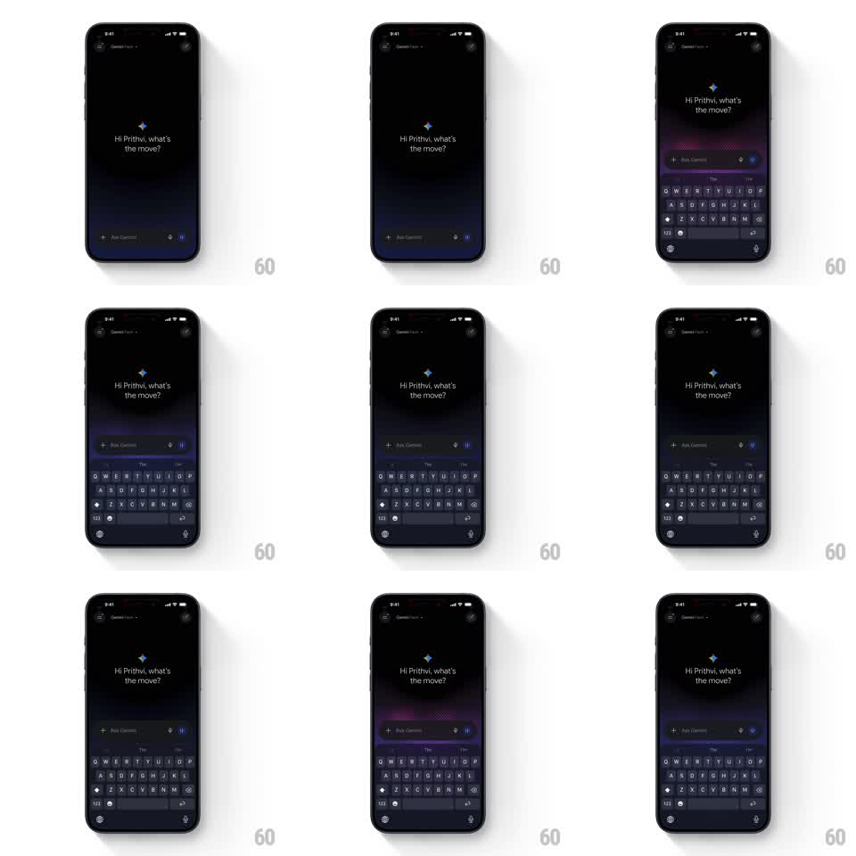

Media
Frame-by-frame

Rebuild this animation 1:1: Gemini's home screen idle - a personalized greeting ("Hi Prithvi, what's the move?") with the four-point sparkle, and the "Ask Gemini" input pill wrapped in a slowly breathing purple-pink gradient glow that pulses from the edges of the field.

Rebuild this animation 1:1: Gemini's home screen idle - a personalized greeting ("Hi Prithvi, what's the move?") with the four-point sparkle, and the "Ask Gemini" input pill wrapped in a slowly breathing purple-pink gradient glow that pulses from the edges of the field.
## Integration
Integration: stack-agnostic spec - springs given as stiffness/damping, timed motions as duration + curve; map every value to your framework and animation library of choice.
## Scene
Black screen: small header, centered greeting text with the Gemini sparkle glyph above it, and the rounded input pill at the bottom (plus mic and plus icons), keyboard raised in later beats.
## Motion spec
Pattern: ambient gradient breathing loop.
- The gradient glow lives behind the input pill: purple-magenta at the pill's edge, dissolving into black within ~40px.
- It breathes: intensity and spread oscillate on a ~4s cycle (opacity 0.5 -> 0.9, spread 20px -> 44px, ease-in-out both ways).
- Hue drift: the gradient slowly rotates through purple -> blue -> magenta over ~12s.
- The sparkle glyph above the greeting twinkles (scale 1 -> 1.15 -> 1, opacity 0.7 -> 1, 2s).
- Greeting text and pill chrome never move.
## Calibration
- The glow reads as light spilling from the field, not a border - soft falloff, no hard edge.
- Slow cycles only; anything under 2s per breath feels like a notification, not ambience.
## Reduced motion
Static 70%-intensity glow; no breathing or hue drift.
## Don't miss
- The glow is strongest at the pill and fades asymmetrically (wider on the long sides).
- Keyboard raising does not interrupt the loop - the gradient stays attached to the pill.